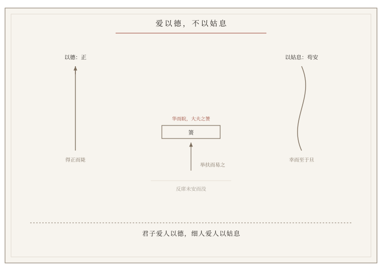

檀弓上 · 三·十七 · 第 220 课
曾子寝疾病，童子执烛见其席曰「华而睆，大夫之箦与」；子春止之，曾子瞿然曰「呼」，命元起易箦；元谏以病革，曾子曰「尔之爱我也不如彼。君子之爱人也以德，细人之爱人也以姑息。吾何求哉？吾得正而毙焉，斯已矣」。反席未安而没。注「言苟容取安」「毙，仆也」。
说什么事：一张不合身份的席，死前必须换掉。
落在哪一层：礼，兼及礼意与人伦。论「爱以德」与「爱以姑息」。
为何编在此位：上节论待死者以公，此节论待生者以德。公与德，皆不徇情。
【经】曾子寢疾，病。樂正子春坐於牀下，曾元、曾申坐於足，童子隅坐而執燭。童子曰：「華而睆，大夫之簀與！」子春曰：「止。」曾子聞之，瞿然曰：「呼！」曰：「華而睆，大夫之簀與？」曾子曰：「然，斯季孫之賜也，我未之能易也。元，起易簀。」曾元曰：「夫子之病革矣，不可以變；幸而至於旦，請敬易之。」曾子曰：「爾之愛我也不如彼。君子之愛人也以德，細人之愛人也以姑息。吾何求哉？吾得正而斃焉，斯已矣。」舉扶而易之，反席未安而沒。
【注】病，谓疾困。乐正子春，曾子弟子。曾元、曾申，曾子之子。华而睆，华，画也；箦谓床笫也；睆，明貌。瞿然，惊貌。呼，叹辞。季孙，鲁大夫。革，急也；变，动也。以德，谓君子之爱人，以德义相规；姑息，苟容取安也。毙，仆也。
【疏】此一节论曾子临死守礼，不易大夫之箦之事。案《尔雅·释器》「箦谓之笫」，郭注「床版也」；《诗》「睍睆黄鸟」，传「睍睆，好貌」，此言「睆，明貌」，谓其色光明也。乐正子春者，《韩诗外传》云「曾子仕于莒，得粟三秉；齐聘以卿，曾子不就」，「乐正子春，曾子弟子，下其足」，是知为弟子也。童子隅坐而执烛者，以其年少，故在隅。曾子瞿然而呼者，惊其言之中也。「斯季孙之赐也，我未之能易也」者，曾子时为士，士之寝席不当用大夫之箦；季孙以大夫之礼赐之，曾子受而未及易，今病因，故命易之。「举扶而易之」者，明非曾子自能起也；「反席未安而没」者，言其死也。疏又引「男子不死于妇人之手」，及《春秋》「鲁僖公薨于小寝，讥即安也；成公薨于路寝，传言道也」，以明曾子之得正。
病 注「谓疾困」。疾之甚。
箦 注「箦谓床笫也」。床版、寝席。
华而睆 注「华，画也」「睆，明貌」。有彩画而光洁。
瞿然 注「惊貌」。
革 注「革，急也」。病危。
姑息 注「苟容取安」。苟且求安。
毙 注「仆也」。倒，此谓死。
曾子卧病沉重。乐正子春坐在床下，曾元、曾申坐在脚边，一个童子坐在角落执烛。童子说：「这么华美光洁，是大夫的箦吧！」子春说：「住口。」曾子听见了，惊起说：「呼！」又说：「华美光洁，是大夫的箦吗？」曾子说：「是的，这是季孙所赐，我没能换掉。元，起来换箦。」曾元说：「夫子病已危急了，不可移动；等天亮再恭敬地换吧。」曾子说：「你爱我不如他。君子爱人以德，小人爱人以姑息。我求什么呢？我求得正而死，这就够了。」于是扶起他换了箦，回到席上还没躺稳就去世了。
此节以一张席作眼。童子不知忌讳，一句话点破：这是大夫之席，士不当用。子春喝止，是护病者之心；曾子却「瞿然」，因为这一句正中其心病——他受了季孙之赐而未及易。于是死前必换。曾元以「病革」谏，曾子以「爱以德／爱以姑息」答。最后「举扶而易之，反席未安而没」——人替他换，换完未及安席，人就没了。
第一层 童子之一言 全场只有童子敢说，也只有他说破了。此中有一层意思：礼之失，往往不是当事人不知，而是旁人不肯说。子春「止」，是爱师；童子直言，也是爱师。二者相较，曾子选了后者。
第二层 未之能易 注「曾子时为士，士之寝席不当用大夫之箦」。他不是不知，是「未之能易」——受赐之时不便推，病中又无力换。礼之失，多是这样一点一点积下的：不是抗礼，是拖延。
第三层 爱以德与爱以姑息 此句是全篇的断语。君子之爱，以德义相规；细人之爱，苟容取安。曾元之谏出于至情，正是「姑息」。曾子不受，因为他要的不是多活一夜，是死得正。此层最见古人对「爱」的定义：爱不是让人舒服，是让人不失其正。
第四层 得正而毙 「吾何求哉？吾得正而毙焉，斯已矣。」一个人到最后所求的，只剩下「正」这个字。疏引「男子不死于妇人之手」，又引僖公薨于小寝见讥、成公薨于路寝见道，说明死处之正，在古礼中是要紧事。
与今日何干 凡亲近之人病危，最易以「别折腾了」为爱。此节给一对照：有一种爱是让人多安一夜，有一种爱是让人死得其所。两者都真，但要分清自己给的是哪一种。
| 左 | 右 |
|---|---|
| 曾子寝疾，病 | 疾已困笃 |
| 童子隅坐执烛 | 年少者在隅，独能见其席 |
| 华而睆，大夫之箦与 | 华，画也；睆，明貌 |
| 子春曰止 | 护师之心，止其言 |
| 曾子瞿然曰呼 | 惊其言之中 |
| 斯季孙之赐，我未之能易 | 受赐未及换，礼失于拖 |
| 元，起易箦 | 死前必换 |
| 病革，不可以变 | 曾元之爱，出于至情 |
| 君子爱人以德，细人爱人以姑息 | 相规与苟安之别 |
| 得正而毙，斯已矣 | 所求者唯一「正」字 |
| 反席未安而没 | 换毕未安而卒 |
画一间昏暗的寝室，视点略俯。中央一张矮床，床上铺着一领细席，席面有隐约的彩画纹样与光泽，四边垂落整齐。床下偏左一人跪坐（背微驼、衣褶旧），床尾并坐两人（一老一少），墙角一名少年执烛，烛光只照亮床席一角与三人的膝。床侧地上放着一双未穿的履。画面其余皆沉入暗处。不写文字。赭色只用在席面纹样的一小段与烛焰上。
